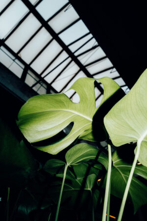

Los tres párrafos tienen el mismo texto, la misma tipografía, el mismo tamaño y el mismo peso. Lo único que cambia es el CSS con el que se pintan. Scrolleá: los párrafos quedan fijos y la imagen pasa por debajo.
color: #000;
El rasterizador no dibuja el mismo glifo para cualquier color: ajusta la máscara de cobertura según el contraste con el fondo. Por eso el mismo párrafo, con la misma fuente y el mismo peso, puede terminar más grueso o más fino según con qué color se lo pinte antes de que el modo de fusión lo invierta al color final.
color: #fff; mix-blend-mode: difference;
El rasterizador no dibuja el mismo glifo para cualquier color: ajusta la máscara de cobertura según el contraste con el fondo. Por eso el mismo párrafo, con la misma fuente y el mismo peso, puede terminar más grueso o más fino según con qué color se lo pinte antes de que el modo de fusión lo invierta al color final.
color: #000; filter: invert(1); mix-blend-mode: difference;
El rasterizador no dibuja el mismo glifo para cualquier color: ajusta la máscara de cobertura según el contraste con el fondo. Por eso el mismo párrafo, con la misma fuente y el mismo peso, puede terminar más grueso o más fino según con qué color se lo pinte antes de que el modo de fusión lo invierta al color final.
